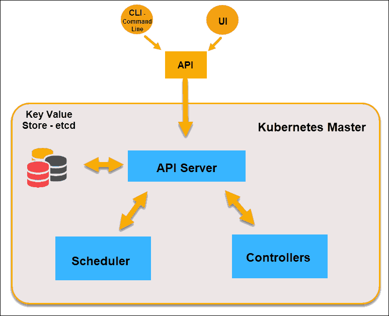

- 作者 :Xcbeyond
- 发表于 :2020-10-26
- 分类 : Kubernetes
- 阅读次数 :
在开始使用之前，应当先了解一下关于Kubernetes的相关概念术语，对后续的学习、使用将有很大的帮助。（Kubernetes的概念比较多，建议加强理解，并清楚各种所处位置及关联！）
Kubernetes中的大部分概念，如：Node、Pod、Replication Controller、Service等都可以看作是一种资源对象，几乎所有资源对象都可以通过Kubernetes提供的kubectl工具（或者API接口）执行增、删、改、查等操作并将其保存在etcd中持久化存储。
从这个角度来看，Kubernetes其实是一个高度自动化的资源控制系统，它通过跟踪对比etcd库里保存的“资源期望状态”与当前环境中的“实际资源状态”的差异来实现自动控制和自动纠错的高级功能。
本文将介绍Kubernetes中重要的资源对象，即：Kubernetes的基本概念和术语。
1、Master
Master是指Kubernetes集群中的控制节点（Master Node），在每个Kubernetes集群里都需要有一个Master来负责整个集群的管理和控制，基本所有的控制命令都发给它，它负责具体的执行过程，后续执行的所有命令基本都是在Master上运行。
Master提供集群的独特视角，并且拥有一系列组件，比如Kubernetes API Server。API Server提供可以用来和集群交互的REST端点。可以通过命令行或图形化界面来维护pod、副本和服务。

在Master上包括以下组件：
-
etcd： 分布式key-value存储，保存集群的状态数据、资源对象数据。
-
API Server(
kube-api-server)： Kubernetes提供的HTTP Rest接口，是所有资源的增、删、改、查等操作的唯一入口，也是集群控制的入口进程。 -
Controllers(
kube-controller-manager)： Kubernetes里所有资源对象的自动化控制中心。 -
Scheduler(
kube-scheduler)： 负责资源调度（Pod调度）的进程，相当于公交公司的"调度室"。
2、Node
除了Master，Kubernetes集群中的其他集群被称为Node，即：Worker Node（工作节点）。与Master一样，Node可以是一台物理主机，也可以是一台虚拟机。
Node是Kubernetes集群中的工作负载节点，每个Node都会被Master分配一些工作负载，当某个Node宕机时，其上的工作负载会被Master自动转移到其他节点上。

每个Node上都运行着以下关键组件：
kubelet： 负责Pod对应的容器创建、启停等任务，同时与Master密切协作，实现集群管理的基本功能。kube-proxy： 实现Kubernetes Service的通信与负载均衡机制的重要组件。- Container Runtime： 下载镜像、运行容器。如Docker引擎，负责本机的容器创建和管理工作。
Node可以再运行期间动态增加调整到Kubernetes集群中，默认情况下kubelet会向Master注册自己。一旦Node被纳入集群管理范围，kubelet进程就会定时向Master上报自己的信息，如操作系统、Docker版本、机器CPU和内存、以及当前有哪些Pod在运行等，这样Master就可以获知每个Node的资源使用情况，并实现高效均衡的资源调度策略。而某个Node在超过指定时间不上报信息时，会被Master判定为“失联”状态，标记为不可用（Not Ready）,随后Master会触发“工作负载大转移”的自动流程。
执行命令kubectl get nodes可以查看在集群中有多少个Node：
[xcbeyond@localhost ~]$ kubectl get nodes
NAME STATUS ROLES AGE VERSION
minikube Ready master 17d v1.19.0
然后通过kubectl describe node <node_name>查看某个Node的详细信息：
[xcbeyond@localhost ~]$ kubectl describe node minikube
Name: minikube
Roles: master
Labels: beta.kubernetes.io/arch=amd64
beta.kubernetes.io/os=linux
kubernetes.io/arch=amd64
kubernetes.io/hostname=minikube
kubernetes.io/os=linux
……
3、Pod
Pod是Kubernetes中的原子对象，是基本构建单元。
Pod表示集群上一组正在运行的容器。通常创建Pod是为了运行单个主容器。Pod 还可以运行可选的sidecar容器，以实现诸如日志记录之类的补充特性。（如：在Service Mesh中，和应用一起存在的istio-proxy、istio-init容器）
通常用Deployment来管理Pod。
一个Pod中可以包含多个容器（其他容器作为功能补充），负责处理容器的数据卷、秘钥、配置。
如下图所示是Pod的组成示意图，我们可以看到每个Pod都有一个特殊的被称为“根容器”的Pause容器。Pause容器对应的镜像属于Kubernetes平台的一部分，除了Pause容器，每个Pod还包含一个或多个紧密相关的用户业务容器。

为什么Kubernetes会设计出一个全新的Pod概念，并且Pod要有这样特殊的组成结构？
-
在一组容器作为一个单元整体的情况下，我们难以对“整体”简单地进行判断及有效地进行控制。比如，一个容器死亡了，此时算是整体死亡么？引入业务无关并且不易死亡的Pause容器作为Pod的根容器，以它的状态代表整体容器组的状态，就简单、巧妙地解决了这个难题。
-
Pod里的多个业务容器共享Pause容器的IP，共享Pause容器挂接的Volume，这样既简化了密切关联的业务容器之间的通信问题，也很好地解决了它们之间的文件共享问题。
Kubernetes为每个Pod都分配了唯一的IP地址，称之为Pod IP，一个Pod里的多个容器共享Pod IP地址。
Kubernetes要求底层网络支持集群内任意两个Pod之间的TCP/IP直接通信，这通常采用虚拟二层网络技术来实现，例如Flannel、Open vSwitch等，因此我们需要牢记一点：在Kubernetes里，一个Pod里的容器与另外主机上的Pod容器能够直接通信。
Pod有两种类型：
-
普通的Pod
-
静态Pod（Static Pod）
后者比较特殊，它并不存放在Kubernetes的etcd存储里，而是存放在某个Node上的一个有个文件中，并且只在此Node上启动运行。而普通的Pod一旦被创建，就会被放入到etcd中存储，随后会被Kubernetes Master调度到某个具体的Node上并进行绑定（Binding），随后该Pod被对应的Node上的kubelet进程实例化成一组相关的Docker容器并且启动起来。
在默认情况下，当Pod里的某个容器停止时，Kubernetes会自动检测到这个问题并且重新启动这个Pod（重启Pod里的所有容器），如果Pod所在的Node宕机，则会将这个Node上的所有Pod重新调度到其他节点上。Pod、容器与Node的关系图如下图所示。

Pod 的生命周期是不确定的，可能非常短暂，但 Pod 具有很强的再生能力，在死后可以自动重新启动（重启机制）。Pod生命周期整个过程中，通常可能处于以下五个阶段之一：
-
Pending： Pod定义正确，提交到Master，但其所包含的容器镜像还未完全创建。通常，Master对Pod进行调度需要一些时间，Node进行容器镜像的下载也需要一些时间，启动容器也需要一定时间。 -
Running： Pod已经被分配到某个Node上，并且所有的容器都被创建完毕，至少有一个容器正在运行中，或者有容器正在启动或重启中。 -
Succeeded： Pod中所有的容器都成功运行结束，并且不会被重启。这是Pod的一种最终状态。 -
Failed： Pod中所有的容器都运行结束了，其中至少有一个容器是非正常结束的（exit code不是0）。这也是Pod的一种最终状态。 -
Unknown： 无法获得Pod的状态，通常是由于无法和Pod所在的Node进行通信。
4、Label
Label（标签）是Kubernetes中另外一个核心概念。一个Label是一个key=value的键值对，其中key与value由用户自己指定。Label可以被附加到各种资源对象上，例如Node、Pod、Service、RC等，一个资源对象可以定义任意数量的Label，同一个Label也可以被添加到任意数量的资源对象上。Label通常在资源对象定义时确定，也可以在对象创建后动态添加或删除。
一般来说，我们会给指定的资源对象定义多个label，来实现多维度的资源分组管理，以便灵活、方便地进行资源分配、调度、配置、部署等管理工作。例如：部署不同版本的应用到不同的环境中，或者监控和分析应用（日志记录，监控，报警等）。一些常用的Label示例如下：
- 版本标签：
release：stable、release: canary - 环境标签：
environment: dev、environemnt: qa、environment: production - 架构标签：
tier: frontend、tier: backend、tier: middleware - ……
某个资源对象定义了Label后，可以通过Label Selector（标签选择器）查询和筛选Label的资源对象，Kubernetes通过这种方式实现了类似SQL的对象查询机制。
通常我们通过描述文件中的spec.selector字段来指定Label，从而Kubernetes寻找到所有包含你指定Label的对象，进行管理。
Kubernetes目前支持两种类型的Label Selector：
- 基于等式的Selector（Equality-based）：等式雷表达式匹配标签。
- 基于集合的Selector（Set-based）：集合操作类表达式匹配标签。
使用Label可以给对象创建一组或多组标签，Label和Label Selector共同构成了Kubernetes系统中最核心的应用模型，使得对象能够精细分组、管理，同时实现了集群的高可用性。


5、Replication Controller
Replication Controller，简称RC，是Kubernetes中核心概念之一，定义了一个期望的场景，即：声明某种Pod的副本数量在任意时刻都符合某个预期值。
RC的定义包括以下几个部分：
- Pod预期的副本数量。
- 用于筛选目标Pod的Label Selector。
- 当Pod的副本数量小于预期数量时，用于创建新Pod的Pod模板。
下面以有3个Node的集群为例进行，说明Kubernetes如何通过RC来实现Pod副本数量自动控制的机制。
假如在我们的RC里定义redis-slave这个Pod需要保持2个副本，系统将可能在其中的两个Node创建Pod，如下图所示：

假如Node 2上的Pod意外终止，则根据RC定义的replicas数量2，Kubernetes将自动创建并启动一个新的Pod，以保证整个集群中始终有两个redis-slave运行。如下图所示，Kubernetes可能选择Node 3或者Node 1来创建一个新的Pod。

此外，在运行时，我们可以通过修改RC的副本数量，来实现Pod的动态缩放（Scaling），可通过执行kubectl scale rc redis-slave --replicas=3命令一键完成。执行结果示意如下图所示：

注意：删除RC并不会影响通过该RC创建好的Pod。 删除所有Pod，可以设置replicas的值为0，然后更新该RC。另外，kubectl也提供了stop和delete命令来一次性删除RC和RC控制的全部Pod。
最后，总结一下RC的特性和作用：
- 大多数情况下，通过自定义一个RC实现Pod的创建过程及副本数量的自动控制。
- RC里包含完整的pod定义模板。
- RC通过label selector机制实现对pod副本的自动控制。
- 通过改变RC里的Pod副本数量，实现对Pod的扩容和缩容功能。
- 通过改变RC里Pod模板中的镜像版本，可以实现Pod的滚动升级功能。
6、Deployment
Deployment是Kubernetes在1.2版本中引入的新概念，用于更好地解决Pod的编排问题。为此，Deployment在内部使用了Replica Set来实现，无论从Deployment的作用、YAML定义，还是从它的具体命令行操作来看，我们都可以把它看作是RC的一次升级。
Deployment相对于RC的一个最大升级是我们可以随时知道当前Pod部署的进度。
典型使用场景：
- 创建Deployment对象来生成对应的Replica set并完成Pod副本的创建。
- 检查Deployment的状态来看部署动作是否完成（Pod副本数是否达到预期值）。
- 更新Deployment来创建新的Pod。
- 如果当前Deployment不稳定，则回滚到一个先前的Deployment版本。
- 暂停Deployment以便于一次性修改多个PodTemplateSpec的配置项，之后再恢复Deployment，进行新的发布。
- 扩展Deployment以应对高负载。
- 查看Deployment状态，以此作为发布是否成功的指标。
7、StatefulSet
在Kubernetes中，Pod的管理对象RC、Deployment、DaemonSet和Job都是面向无状态的服务。但现实中有很多服务是有状态的，特别是一些复杂的中间件集群，例如MySQL集群、MongoDB集群、Kafka集群、Zookeeper集群等，这些应用集群有以下一些共同点。
- 每个节点都有固定的身份ID，通过这个ID，集群中的成员可以相互发现并且通信。
- 集群的规模是比较固定的，集群规模不能随意变动。
- 集群里的每个节点都是有状态的，通常会持久化数据到永久存储中。
- 如果磁盘损坏，则集群里的某个节点无法正常运行，集群功能受损。
如果用RC或Deployment控制Pod副本数的方式来实现上述有状态的集群，则我们会发现第一点是无法满足的，因为Pod的名字是随机产生的，Pod的IP地址也是在运行期才确定且可能有变动的，我们事先无法为每个Pod确定唯一不变的ID，为了能够在其他节点上恢复某个失败的节点，这种集群中的Pod需要挂接某种共享存储，为了解决这个问题，Kubernetes从v1.4版本开始引入了PetSet这个新的资源对象，并且在v1.5版本时更名为StatefulSet，StatefulSet从本质上来说，可以看作Deployment/RC的一个特殊变种，它有如下一些特性。
- StatefulSet里的每个Pod都有稳定、唯一的网络标识，可以用来发现集群内的其他成员。假设StatefulSet的名字叫kafka，那么第一个Pod叫kafak-0，第二个Pod叫kafak-1，以此类推。
- StatefulSet控制的Pod副本的启停顺序是受控的，操作第n个Pod时，前n-1个Pod已经时运行且准备好的状态。
- StatefulSet里的Pod采用稳定的持久化存储卷，通过PV/PVC来实现，删除Pod时默认不会删除与StatefulSet相关的存储卷（为了保证数据的安全）。
StatefulSet除了要与PV卷捆绑使用以存储Pod的状态数据，还要与Headless Service配合使用，即在每个StatefulSet的定义中要声明它属于哪个Headless Service。Headless Service与普通Service的关键区别在于，它没有Cluster IP，如果解析Headless Service的DNS域名，则返回的是该Service对应的全部Pod的Endpoint列表。StatefulSet在Headless Service的基础上又为StatefulSet控制的每个Pod实例创建了一个DNS域名，这个域名的格式为：
$(podname).$(headless service name)
比如一个3节点的Kafka的StatefulSet集群，对应的Headless Service的名字为kafka，StatefulSet的名字为kafka，则StatefulSet里面的3个Pod的DNS名称分别为kafka-0.kafka、kafka-1.kafka、kafka-3.kafka，这些DNS名称可以直接在集群的配置文件中固定下来。
8、Service
Service也是Kubernetes里的最核心的资源对象之一，Kubernetes里的每个Service其实就是我们经常提起的微服务架构中的一个“微服务”，上面我们所说的Pod、RC等资源对象其实都是为讲解Kubernetes Service做铺垫的。下图显示了Pod、RC与Service的逻辑关系。

从图中我们看到，Kubernetes的Service定义了一个服务的访问入口地址，前端的应用（Pod）通过这个入口地址访问其背后的一组由Pod副本组成的集群实例，Service与其后端Pod副本集群之间则是通过Label Selector来实现“无缝对接”的。而RC的作用实际上是保证Service的服务能力和服务质量始终处于预期的标准。
9、Job
Job（批处理任务）通过并行或串行启动多个进程去处理一批工作，在处理完成后，整个批处理任务结束。从Kubernetes 1.2版本开始，支持批处理类型的应用，可以通过Kubernetes Job这种新的资源对象定义并启动一个批处理任务Job。与RC、Deployment、ReplicaSet类似，Job也是用来控制一组Pod容器。
Job负责批量处理短暂的一次性任务 ，即仅执行一次的任务，它保证批处理任务的一个或多个Pod成功结束。
10、Volume
Volume（存储卷）是Pod中能够被多个容器访问的共享目录。Kubernetes的Volume概念、用途和目的与Docker的Volume比较类似，但两者不能等价。首先，Kubernetes中的Volume定义在Pod上，然后被一个Pod里的多个容器挂载到具体的文件目录下；其次，Kubernetes中的Volume中的数据也不会丢失。最后，Kubernetes支持多种类型的Volume，例如Gluster、Ceph等先进的分布式文件系统。
11、Namespace
Namespace（命名空间）是Kubernetes系统中的另一个非常重要的概念，Namespace在很多情况下用于实现多租户的资源隔离。Nameaspace通过将集群内部的资源对象“分配”到不同的Namespce中，形成逻辑上分组的不同项目、小组或用户组，便于不同的分组在共享使用整个集群的资源的同时还能被分别管理。
Kubernetes集群默认会创建一个名为default的Namespace，通过kubectl可以查看：
[xcbeyond@bogon ~]$ kubectl get namespaces
NAME STATUS AGE
default Active 23d
istio-system Active 22d
kube-node-lease Active 23d
kube-public Active 23d
kube-system Active 23d
kubernetes-dashboard Active 23d
如果不特别指定Namespace，则用户创建的Pod、RC、Service等都将创建到默认的default的Namespace中。
12、Annotation
Annotation（注解）与Label类似，也使用key/value键值对的形式进行定义。不同的是Label具有严格的命名规则，它定义的是Kubernetes对象的元数据（Metadata），并且用于Label Selector。而Annotation则是用户任意定义的“附加”信息，以便于外部工具进行查找，很多时候，Kubernetes的模块自身会通过Annotation的方式标记资源对象的特殊信息。
通常来说，用Annotation来记录的信息如下：
- build信息、release信息、Docker镜像信息等，例如时间戳、release id号、PR号、镜像hash值、docker registry地址等。
- 日志库、监控库、分析库等资源库的地址信息。
- 程序调试工具信息，例如工具、版本号等。
- 团队等联系信息，例如电话号码、负责人名称、网址等。
13、ConfigMap
为了能够准确、深刻理解Kubernetes ConfigMap的功能和价值，可以先从Docker说起。我们都知道，Docker通过将程序、依赖库、数据及配置文件等“打包固化”到一个不变的镜像文件，以解决因应用部署差异的难题，但这同时带来了另一个棘手的问题，即：配置文件中的参数在运行期间如何修改的问题。为了解决这个问题，Docker提供了以下两种方式：
- 通过环境变量来传递参数。
- 通过Docker Volume将容器外的配置文件映射到容器内。
在大多数情况下，我们更倾向于后一种方式，应该大多数应用通常拥有多个参数，配置文件映射的方式简洁。但这种方式也有明显的缺陷：必须事先在宿主机上创建好配置文件，然后容器启动时才能够映射到容器里。
如果在分布式系统中，就会变得更加糟糕，多台宿主机上创建相同的配置文件，并且要确保这些配置文件的一致性，是很难实现的。为此，Kubernetes引入了ConfigMap，巧妙的解决了这种问题。
把所有的配置项都当作key-value字符串，如：配置项host=192.168.1.1、user=root、password=123456用于表示连接FTP服务器的配置参数。这些配置项作为Map表中的一项，整个Map的数据被持久化存储在Kubernetes的etcd中，并提供API方便Kubernetes相关组件或应用CRUD操作，这里用来保存配置参数的Map就是Kubernetes ConfigMap资源对象。
ConfigMap机制： 将存储在etcd中的ConfigMap通过Volume映射方式变为目标Pod内的配置文件，不管目标Pod被调度到哪台服务器上，都会自欧东完成映射。如果ConfigMap中的key-value数据被修改，则映射到Pod中的“配置文件”也会随之自动更新。于是，ConfigMap就形成了分布式系统中最为简单且对应用无侵入的配置中心。
14、总结
上述的这些概念术语也是Kubernetes的核心组件，它们共同构成了Kubernetes的框架和计算模型。通过对它们进行灵活组合，用户就可以快速、方便地对容器集群进行配置、创建和管理。除了本文介绍的概念外，Kubernetes中还有许多其他的概念，用于辅助配置资源对象，如：LimitRange、ResourceQuota等，更多概念术语可参照官方术语表：https://kubernetes.io/zh/docs/reference/glossary/?fundamental=true
参考文章：